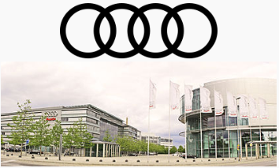

Найкращий автомобільний бренд
Audi - абсолютний переможець опитування серед читачів видання Auto Build «Найкращі бренди у всіх класах». Бренд чотирьох кілець завоював сім окремих перемог у номінаціях оцінки якості та з легкістю виборов загальну перемогу. Audi також посів перше місце у номінаціях «Дизайн» та «Ціна / ходові характеристики» і у номінації «Надійні автомобілі». Жоден бренд не показував кращі результати за ключовими характеристиками опитування щодо образу автомобіля, у якому взяли участь 70 000 читачів.
Читачі Auto Bild зробили висновок, що автомобілі Audi найкраще проявили себе в номінаціях «Якість», «Дизайн» та «Ціна / ходові характеристики». Читачі визнали бренд з чотирма кільцями переможцем, віддавши за нього 55,2 % голосів.
Audi — з 1909 року німецький виробник автомобілів. Штаб-квартира розташована в місті Інгольштадт. У 1928 році компанію купує Йорген Расмуссен. Сьогодні компанія займається виготовленням престижних автомобілів.
Витоки компанії сягають початку XX століття, коли початкові підприємства (Horch і Audiwerke), засновані інженером Августом Хорьхом, і два інших виробника (DKW і Wanderer), об'єднуються у компанію Auto Union у 1932 році. Сучасна епоха Audi почалася в 1960-х роках, коли Auto Union був придбаний компанією Volkswagen у фірми Daimler-Benz. Після перезапуску бренду Audi із введенням в 1965 році серії Audi F103, Volkswagen об'єднав Auto Union з NSU Motorenwerke у 1969 році, створюючи таким чином сучасну компанію.
Як змінювались логотипи >
Назва компанії базується на латинському перекладі прізвища засновника Августа Хорьха. «Хорьх», що означає «слухати» німецькою мовою, стає «audi» латинською мовою. Чотири кільця логотипу Audi представляють одну з чотирьох автомобільних компаній, які об'єдналися для створення попередника Audi — Auto Union. Гасло Audi — «Vorsprung durch Technik», що означає «Прогрес через технології». Однак Audi USA використовували гасло «Правда — в інженерії» з 2007 по 2016 рік, а з 2016 року не використовували слоган.